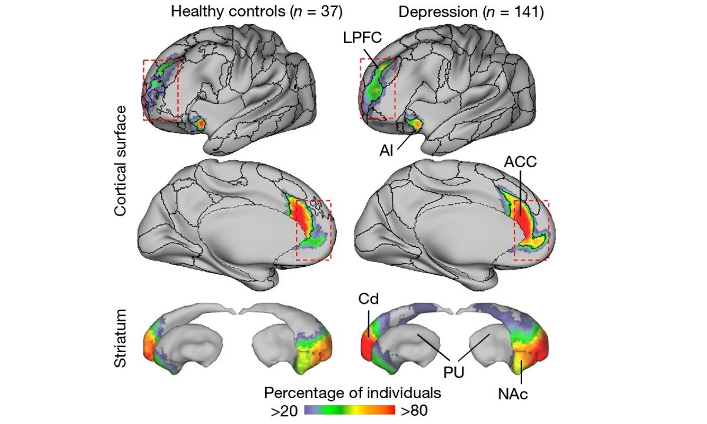
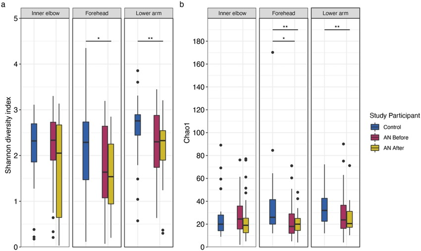
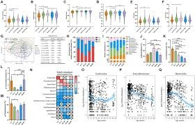

fMRI Studies on Depression
Using functional magnetic resonance imaging (fMRI) to compare healthy controls (HC) and patients with depression (MDD), we used light network analysis, specifically the Salient Network (SAL), which was reduced to the Brazilian social selection.
(A) SAL in healthy controls: Illustrating the areas of SAL network activity in healthy individuals. The black shaded area in the brain (LPFC, AI, ACC) represents the activity. The percentage (3.17% of the cortex) means that the network covers approximately 3% of the cerebral cortex in healthy individuals.
Regional areas: LPFC: lateral prefrontal lobe (control and attention), AI: insular (sensation of physical and emotional states), and ACC: stenographic hat (different deregulation).

Figure 6: Salience Network (SAL) activity in healthy controls vs. depressed patients
(b) SIMD-1 / SIMD-2 / SIMD-4: These illustrate different types (subtypes) of depression, called SIMD. Each subtype has a different distribution of the SAL network in the brain, with a higher percentage than healthy controls (5.7%, 4.6%, 5.2%). This means that activity in the network is 99% higher in depression indicators compared to healthy controls → this indicates impaired regulation of emotions and attention.
(c) Graphs comparing the percentage of SAL network opt-outs between: HC (healthy controls) & SMD or MDD (patients) Significantly higher in patients with activity, structural and functional differences were found in the network.
(d) Same concept, but measuring activity in the striatum (a brain region involved in reward and motivation). There is not a significant difference, but the overall error indicates increased depression.
(e) SAL Density Maps: These color maps illustrate the network makeup in each brain region: In healthy individuals: activity is limited and concentrated. In depression: activity is widespread and more prevalent in emotional and affective areas. The colors illustrate the proportions of people with activity in each region (darker color = more activity).
Machine Learning Applications
(f) A learning machine model (SVM): used fMRI data to differentiate between healthy and depressed individuals. Accuracy rate = 78.4%. The table in English is the confusion matrix: The model correctly predicted healthy individuals 62.1% of the time. The analysis predicted depressed individuals 82.5% of the time.
(z) Weights Advantage: This figure illustrates the most significant gains that contributed to the category, which were from the SAL network more than other networks. This means that the SAL network is the strongest predictor of depression.
(h) Loss of Accuracy: The experience here is: If we remove a specific network from the analysis, is the accuracy confirmed? When they removed SAL, the scientists clearly demonstrated the accuracy, proving it was the most important network for training between healthy and depressed individuals.
The SAL network (salience network) is more active and expanded in patients with depression. This network is required as a biomarker for early diagnosis. Artificial intelligence discovers the precise truth by analyzing the activity of this neural network.
Another study comparing healthy individuals (HC) and a group of patients with chronic depression (MDD) at the gut microbiome/metabolite level (bacterial taxa, metabolites/short-chain fatty acids, and a potential inflammatory pattern) was conducted. The goal was to demonstrate differences in diversity, dominant species, and associations between bacteria and biochemicals associated with disease states.
(A) Alpha Diversity Comparisons and Boxplots: This panel displays a set of boxplots representing indices of internal diversity of the microbial community (alpha diversity), such as Chao1 and Observed OTUs (for species richness), Faith's Phylogenetic Diversity (PD) (for phylogenetic dimension), Shannon Index (for diversity measurement), and Pielou's Evenness (for homogeneity). The values for each group are displayed as dots, with the blue dots representing the healthy individual (HC) group and the red dots representing the MDD group. Above each plot is the p-value resulting from the statistical test used to compare the two groups. Some measures indicated statistically significant differences (e.g., p = 0.018, p = 0.031, p = 0.0072), while others showed no significant differences (p ≈ 0.9 or p = 0.6). These results demonstrate that some indicators of microbial diversity, including richness, phylogenetic dimension, and overall diversity, differ significantly between healthy and depressed individuals, suggesting that depression may be associated with alterations in the balance and diversity of the human microbiome.

Figure 7: Alpha diversity comparisons between healthy controls and depressed patients

Figure 8: Beta diversity analysis showing compositional differences
(B) Beta Diversity / Distance to HC: This figure shows box plots representing the distances between each sample and the reference center of the healthy control group (HC), using metrics such as Bray–Curtis or UniFrac. The blue column represents the distance between the healthy samples themselves, while the red column represents the distances between the depressed samples and the healthy control samples. The results indicate that the microbial community composition of individuals with depression differs significantly from that of healthy individuals, reflecting a significant compositional change (beta diversity) between the two groups.
(C) LDA/LEfSe analysis to identify distinct taxa (Bar Chart): This figure shows the results from a Linear Discriminant Analysis Effect Size (LEfSe) analysis used to identify the most discriminating taxa (genera or families) between the two groups. The blue bars represent the most abundant taxa in the health control group (HC), while the red bars indicate the most abundant taxa in the MDD group. The length of each bar indicates the LDA score, which reflects the statistical effect size of each taxa in distinguishing the two groups. The results demonstrate the presence of a bacterial population associated with healthy individuals, often associated with beneficial microbial functions, versus more abundant bacterial species in depressed individuals, which may be related to inflammatory environments or metabolic disorders.
Key Findings from Microbiome Research
Differences in microbial diversity (alpha and beta) between MDD and HC: Some diversity measures were altered in patients, and the microbiome composition of patients was more distant/different from that of healthy controls.
Distinct taxonomic signatures: There are bacterial genera/families that are elevated in patients and others in healthy controls—identified by LDA (LEfSe), providing clues to microbes that may be associated with disease or health status.
Microbiome and metabolome/biomarker associations: Strong associations between specific bacteria and levels of short-chain fatty acids or inflammatory markers—opening up interpretive pathways for the mechanisms of the gut-brain axis.
Intra-patient heterogeneity: Not all MDD samples are the same; There are sub-patterns or subgroups (heterogeneity) that may explain variations in response to treatment or severity of symptoms.
Medications:
Many types of antidepressants are available, including those below. Be sure to discuss possible major side effects with your doctor or pharmacist.
Selective serotonin reuptake inhibitors (SSRIs): Doctors often start by prescribing SSRI, These drugs are considered safer and generally cause fewer bothersome side effects than other types of antidepressants. SSRIs include citalopram (Celexa), escitalopram (Lexapro), fluoxetine (Prozac), paroxetine (Paxil, Pexeva), sertraline (Zoloft) and vilazodone (Viibryd).
Serotonin-norepinephrine reuptake inhibitors (SNRIs): Examples of SNRIs include duloxetine (Cymbalta), venlafaxine (Effexor XR), desvenlafaxine (Pristiq, Khedezla) and levomilnacipran (Fetzima).
Atypical antidepressants: These medications don't fit neatly into any of the other antidepressant categories. They include bupropion (Wellbutrin XL, Wellbutrin SR, Aplenzin, Forfivo XL), mirtazapine (Remeron), nefazodone, trazodone and vortioxetine (Trintellix).
Tricyclic antidepressants: These drugs such as imipramine (Tofranil), nortriptyline (Pamelor), amitriptyline, doxepin, trimipramine (Surmontil), desipramine (Norpramin) and protriptyline (Vivactil) can be very effective, but tend to cause more-severe side effects than newer antidepressants. So tricyclics generally aren't prescribed unless you've tried an SSRI first without improvement.
Monoamine oxidase inhibitors (MAOIs): such as tranylcypromine (Parnate), phenelzine (Nardil) and isocarboxazid (Marplan) may be prescribed, typically when other drugs haven't worked, because they can have serious side effects. Using MAOIs requires a strict diet because of dangerous (or even deadly) interactions with foods such as certain cheeses, pickles and wines and some medications and herbal supplements. Selegiline (Emsam), a newer MAOI that sticks to the skin as a patch, may cause fewer side effects than other MAOIs do. These medications can't be combined with SSRIs.
Other medications: Other medications may be added to an antidepressant to enhance antidepressant effects. Your doctor may recommend combining two antidepressants or adding medications such as mood stabilizers or antipsychotics. Anti-anxiety and stimulant medications also may be added for short-term use.
Finding the right medication:
If a family member has responded well to an antidepressant, it may be one that could help you. Or you may need to try several medications or a combination of medications before you find one that works. This requires patience, as some medications need several weeks or longer to have full effect and for side effects to ease as your body adjusts.
Inherited traits play a role in how antidepressants affect you. In some cases, where available, results of genetic tests (done by a blood test or cheek swab) may offer clues about how your body may respond to a particular antidepressant. However, other variables besides genetics can affect your response to medication.
Risks of abruptly stopping medication:
Don't stop taking an antidepressant without talking to your doctor first. Antidepressants aren't considered addictive, but sometimes physical dependence (which is different from addiction) can occur.
Stopping treatment abruptly or missing several doses can cause withdrawal-like symptoms, and quitting suddenly may cause a sudden worsening of depression. Work with your doctor to gradually and safely decrease your dose.
Antidepressants and pregnancy: If you're pregnant or breast-feeding, some antidepressants may pose an increased health risk to your unborn child or nursing child. Talk to your doctor to see if you become pregnant or you're planning to become pregnant.
Antidepressants and increased suicide risk: Most antidepressants are generally safe, but the Food and Drug Administration (FDA) requires all antidepressants to carry a black box warning, the strictest warning for prescriptions. In some cases, children, teenagers and young adults under age 25 may have an increase in suicidal thoughts or behavior when taking antidepressants, especially in the first few weeks after starting or when the dose is changed.
Anyone taking an antidepressant should be watched closely for worsening depression or unusual behavior, especially when starting a new medication or with a change in dosage. If you or someone you know has suicidal thoughts when taking an antidepressant, immediately contact a doctor or get emergency help.
Keep in mind that antidepressants are more likely to reduce suicide risk in the long run by improving mood.
Psychotherapy: Psychotherapy is a general term for treating depression by talking about your condition and related issues with a mental health professional. Psychotherapy is also known as talk therapy or psychological therapy.
Different types of psychotherapy can be effective for depression, such as cognitive behavioral therapy or interpersonal therapy. Your mental health professional may also recommend other types of therapies. Psychotherapy can help you in adjust to a crisis or other current difficulty, Identifying negative beliefs and behaviors and replace them with healthy, positive ones, exploring relationships and experiences, and develop positive interactions with others, Finding better ways to cope and solve problems, identifying issues that contribute to your depression and change behaviors that make it worse, Regaining a sense of satisfaction and control in your life and help ease depression symptoms, such as hopelessness and anger, Learning to set realistic goals for your life, and Developing the ability to tolerate and accept distress using healthier behaviors
Alternate formats for therapy: Formats for depression therapy as an alternative to face-to-face office sessions are available and may be an effective option for some people. Therapy can be provided, for example, as a computer program, by online sessions, or using videos or workbooks. Programs can be guided by a therapist or be partially or totally independent.
Before you choose one of these options, discuss these formats with your therapist to determine if they may be helpful for you. Also, ask your therapist if he or she can recommend a trusted source or program. Some may not be covered by your insurance, and not all developers and online therapists have the proper credentials or training.
Hospital and residential treatment: In some people, depression is so severe that a hospital stay is needed. This may be necessary if you can't care for yourself properly or when you're in immediate danger of harming yourself or someone else. Psychiatric treatment at a hospital can help keep you calm and safe until your mood improves.
Partial hospitalization or day treatment programs also may help some people. These programs provide outpatient support and counseling needed to get symptoms under control.